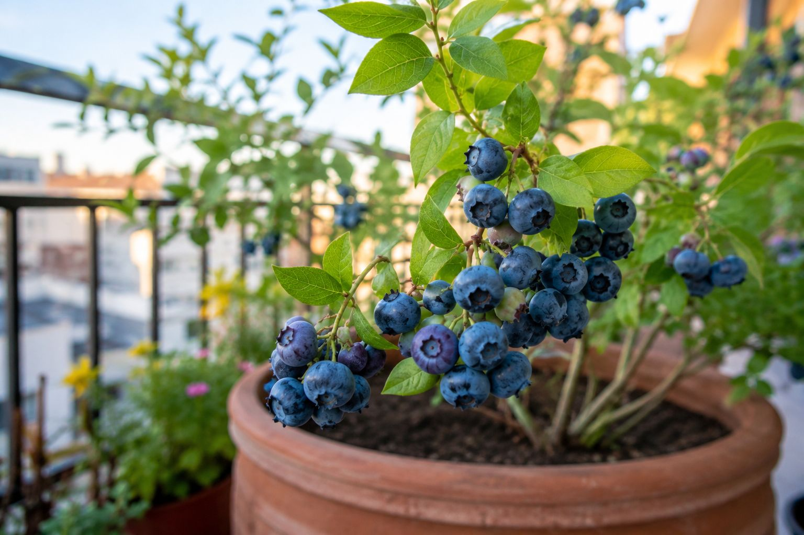

Si has buscado "cómo cultivar arándanos en maceta" habrás visto mil guías que dicen lo mismo: sol, riego, una maceta grande. Pero se saltan lo único que de verdad decide el éxito o el fracaso: el arándano necesita un sustrato ácido, y en el sustrato normal de cualquier supermercado se muere lentamente sin que sepas por qué. Esta guía va al grano con lo que importa.
1. Lo que nadie te dice: el sustrato ácido es obligatorio
El arándano pertenece a la familia de las ericáceas (como las azaleas o los rododendros). Estas plantas solo absorben los nutrientes cuando el suelo es ácido, con un pH entre 4,5 y 5,5. El sustrato universal normal ronda un pH de 6,5-7, demasiado alto. En ese sustrato, el arándano no puede absorber el hierro y otros minerales: las hojas se vuelven amarillas con los nervios verdes (lo que se llama clorosis férrica) y la planta se debilita hasta morir, por mucho que la riegues y le dé el sol.
La solución es simple: usar desde el principio un sustrato específico para plantas acidófilas o ericáceas. No es opcional, es la diferencia entre tener cosecha o no.
Lo esencial para arrancar bien (verificado en Amazon):
Sustrato ácido para arándanos: pH 4,5-5,5, el factor más importante de todos. 🛒 Ver en Amazon →
Maceta de 30L con drenaje: El arándano necesita espacio y que no se encharque. 🛒 Ver en Amazon →
Abono acidificante: Mantiene el pH bajo que la planta necesita a largo plazo. 🛒 Ver en Amazon →
2. El agua también importa (y mucho)
El agua del grifo en gran parte de España es calcárea, es decir, tiene cal, que sube el pH del sustrato y arruina poco a poco todo el trabajo. Si puedes, riega tus arándanos con agua de lluvia recogida o agua filtrada. Si solo tienes agua del grifo dura, puedes dejarla reposar 24 horas en un cubo abierto antes de regar, lo que reduce algo el cloro (aunque no la cal). En zonas de agua muy dura, el agua de lluvia marca una diferencia enorme.
En cuanto a la cantidad, el arándano quiere el sustrato siempre ligeramente húmedo, nunca encharcado ni seco del todo. Como la maceta de arándano es grande (30-40L), conviene calcular bien para no pasarse ni quedarse corto.
💧 Truco: una capa de mulching (corteza de pino) sobre el sustrato conserva la humedad, mantiene la raíz fresca en verano y, al degradarse, ayuda a acidificar el suelo. Doble beneficio.
3. Cuándo plantar según tu zona climática
Aquí es donde la mayoría de guías generalistas fallan: dicen "planta en primavera u otoño" sin más. Pero no es lo mismo el norte húmedo que el sureste seco. Estos son los meses reales de plantación según la zona, verificados en nuestro calendario:
- Zona atlántica (norte húmedo): mejor en marzo-abril o en octubre. Es la zona ideal para el arándano en España, clima fresco y húmedo.
- Zona continental (interior): marzo-abril, evitando las heladas tardías fuertes.
- Zona mediterránea: marzo-abril u octubre; protege del sol intenso del mediodía en verano con algo de sombra.
- Zona semiárida y subtropical (sur): mejor en otoño (octubre-noviembre), para que la planta se asiente antes del calor. Es la zona más difícil para el arándano por el calor y el agua dura.
Para saber exactamente qué zona corresponde a tu municipio (depende de la altitud y la latitud, no solo de la provincia), usa el calendario de siembra que tienes más abajo.
4. Dos plantas mejor que una
Muchas variedades de arándano producen mucho más fruto si hay dos plantas de variedades distintas cerca, porque se polinizan mejor entre ellas. Si tienes sitio para dos macetas, la diferencia en cantidad de fruta es notable. Si solo tienes espacio para una, elige una variedad autofértil (lo indica la etiqueta).
5. Paciencia: los primeros años
El arándano no da una gran cosecha el primer año. De hecho, muchos expertos recomiendan quitar las flores el primer año para que la planta concentre su energía en hacerse fuerte en lugar de en producir fruta. A partir del segundo o tercer año empieza la producción de verdad, y entonces puede acompañarte dos o tres décadas. Es una inversión a medio plazo, pero pocas plantas dan tanto durante tanto tiempo.
Calcula los datos exactos para tu caso
Cada balcón y cada zona de España es distinta. Estas herramientas gratuitas te dan los números exactos para tu situación, sin registro:
← Volver a Consejos | Te puede interesar: Los mejores sustratos para huerto urbano · Qué abono comprar según la planta